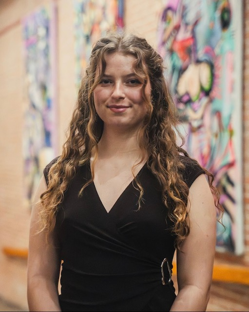

I am a journalism student at the University of Maryland with experience in reporting, research, videography, and broadcast production. I have contributed to both student and local publications.
Wrote an article about the 50th anniversary of the Women, Gender, and Sexuality Studies program. Gained experience pitching stories, conducting interviews, researching, and meeting editorial deadlines.
Served as Floor Director, Camera Operator, and Graphics Supervisor for a student-run broadcast show. Collaborated with the production team and adapted quickly to challenges in a fast-paced environment while working under pressure.
Wrote articles and learned about the publication process for a local newspaper, including structuring print layouts, selecting stories for publication, and developing strategies to engage the community. Gained experience in reporting, research, working with editors, and photography, including providing photos for contributed articles and producing a photo essay about the Fourth of July celebration.